ഒരു ദിവസം
One day, in its five parts
Velupp, ravile, uchha, sandhya, rathri. Light, weather, sound and who is about all follow the hour, and the hour is yours.
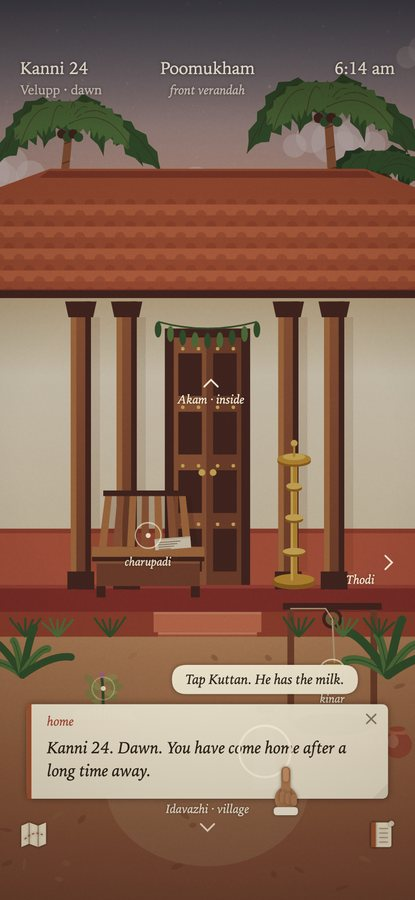
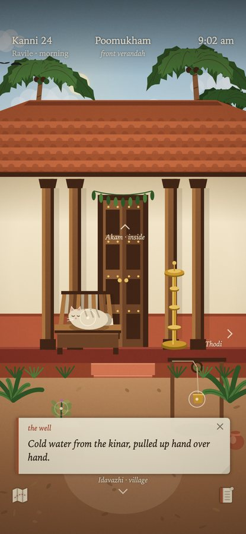


You have come home to the tharavad after years away. The village has kept your place.
Play the first morning in your browserGramam is a cozy life game set in a Kerala village between 1950 and 1980. The village keeps real time. Dusk in the game is dusk outside your window; Onam is Onam. While you are away the village goes on, and when you come back the milk is at the step and a letter is under the stone on the charupadi.
Nothing is scored. Nothing decays. There are no menus: you tap the kettle, the pulley, the lamp, the person. Everything you see and hear was drawn and composed in code by one person who grew up with these things.
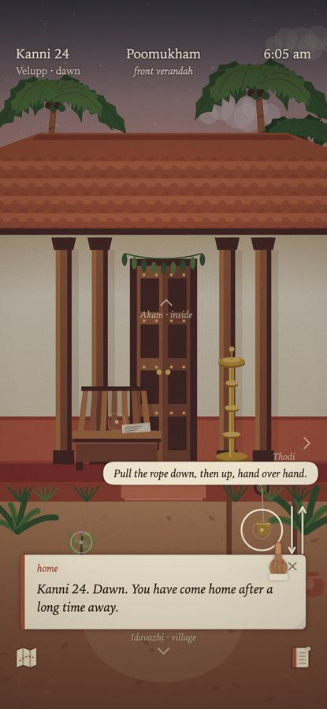
Velupp, ravile, uchha, sandhya, rathri. Light, weather, sound and who is about all follow the hour, and the hour is yours.


Every big slow thing in the village starts when you start it. Sit on the station bench and the train comes. That is the only rule the station has.
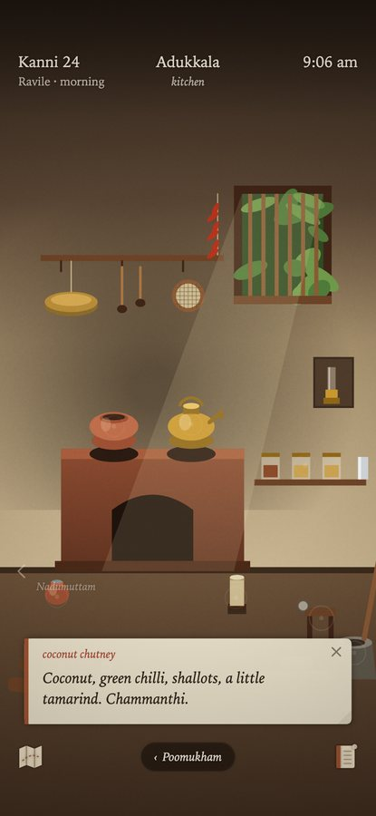
Coconut, green chilli, shallot and tamarind on the ammikkallu, side to side, until it is chammanthi. Cooking is step by step at the real places in the kitchen, with the ingredients on the ledge.
Ten mornings to Thiruvonam, one ring a day, with your finger round the muttam. Thetti, chembarathi, thumba, konna.
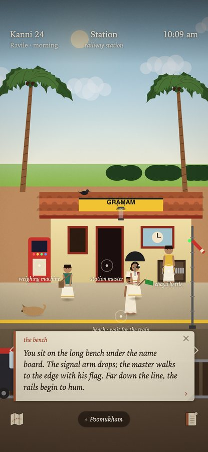
Wave the anavandi down at the kavala, call Pappan’s thoni across the river, pull the pally bell rope, light the deepastambham tier by tier, haul the shore net with the men.
Real dates. The pookalam begins on Atham, the kani is set on Vishu eve, the Ramayanam is read in Karkidakam, and the art forms come on their own days.
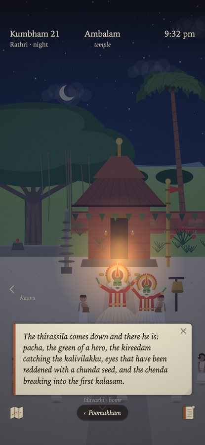
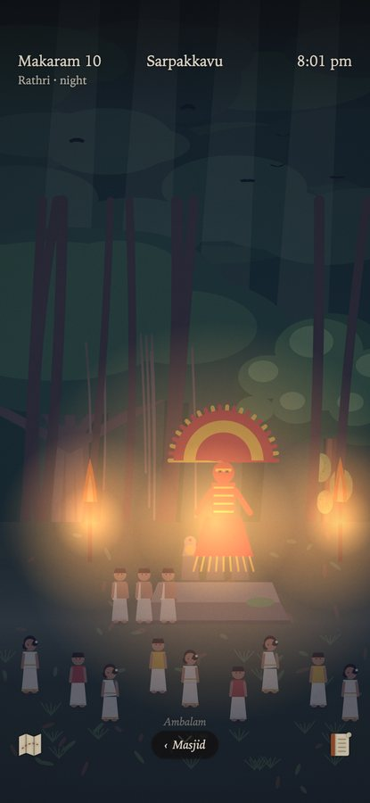
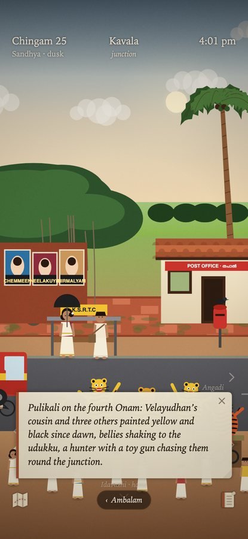
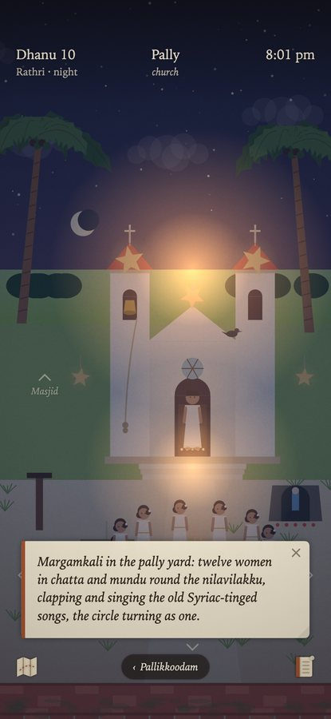
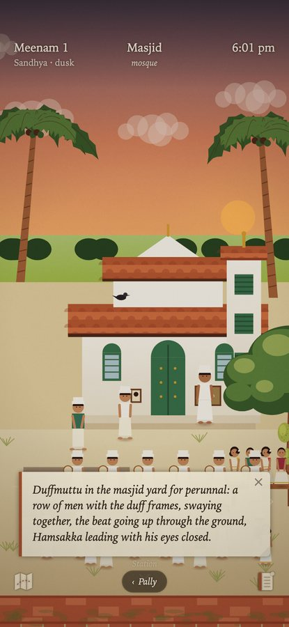
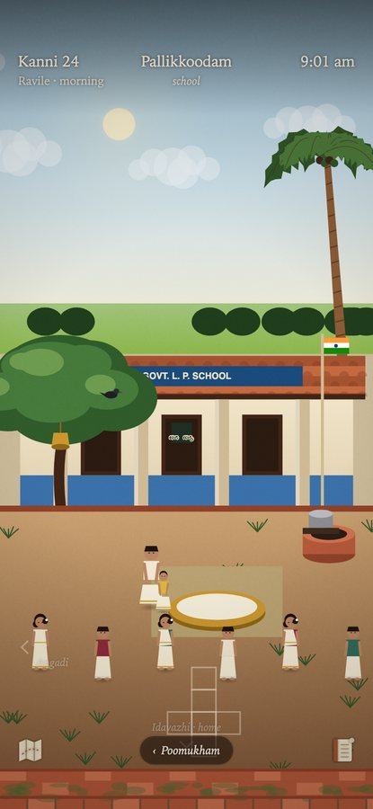
Ramzan, Eid and Bakrid at the masjid; Christmas and perunnal at the pally; the utsavam and Theyyam at the ambalam and the kaavu. One village, all of it.
A folded hand-drawn map. Seven places in the tharavad, the rest down the lane and across the river.
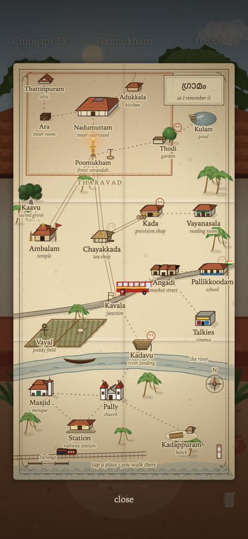
Nobody makes speeches. Five villagers greet you by the hour, and what each one leaves behind shows on the house and in the diary. Letters come from a brother in Madras and then the Gulf, and you write back.
Every caption, letter and diary line exists in a village Malayalam of the period, in the register of the Malayalam novel. Choose how much of it you want.
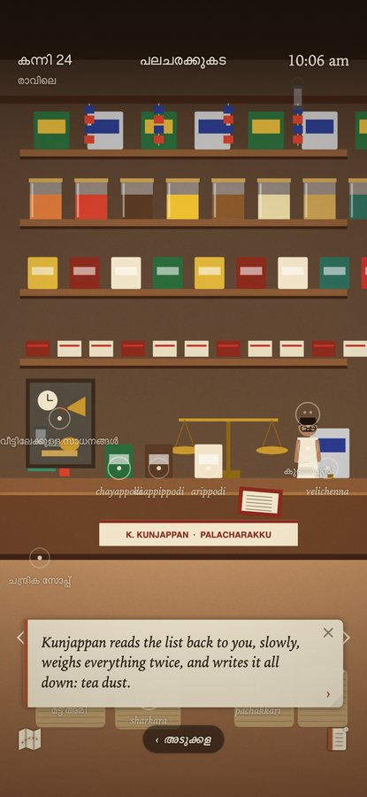
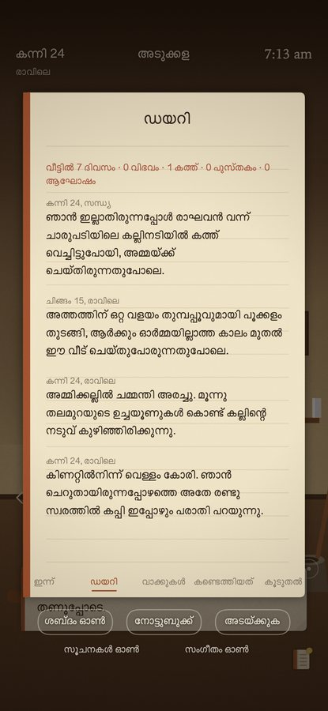
“At sandhya the bell from the ambalam carries all the way across the paddy. Amma used to light the lamp at the first ring.”From the diary. Four Carnatic ragas tied to the hour, Mohanam at dawn, Kalyani at dusk, Neelambari at night, and a soundscape synthesized note by note: wind in the palms, the chenda across the field, rain on tiles.
iPhone, iPad and Android, Onam 2027. TestFlight from Vishu. Until then, the first morning is yours in the browser.
Play the first morning